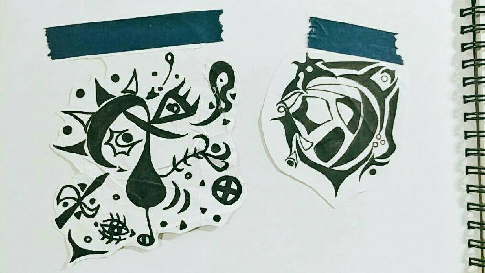
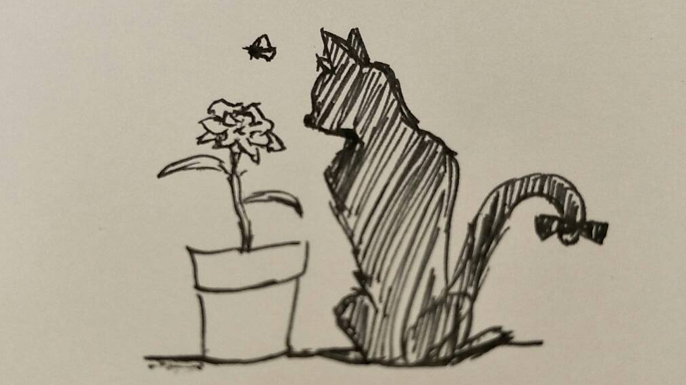
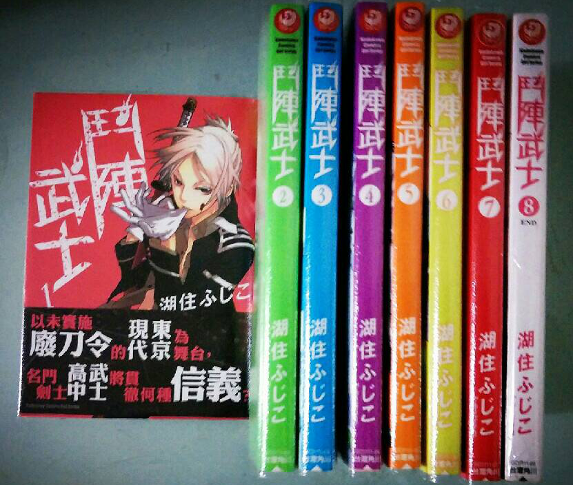

遊玩類型從動作格鬥類到模擬經營類都有涉略。
推薦遊戲：
This War of Mine
這是一款描述戰爭的殘酷與戰爭下的平民該如何生存的模擬生存經營類遊戲。
除此之外，此遊戲還有成立基金會將收益捐贈給戰爭受難孤兒。
挺喜歡塗鴉一些身邊的小事物，或是創造一些圖騰之類的東西
塗鴉：


宅齡大約9年，中間曾有過極熱衷，剛出必追的時期，現在呈現佛系養生儲糧，慢慢有空再追的狀態
以下是最近看過的作品：
漫畫：

小說：
活下去，為了以後所有美好的藍圖，首要目標就是活下去
未來至少要找到能夠養活自己，最好能夠回饋父母以及一路以來幫助過自己的人的工作
"不求最好，至少溫飽"
" 順利畢業，學到出社會也不會輕易被淘汰的程度 "
" 尋找自我，好好把自己定下來，不要迷失 "
在不斷努力向著自己目標前進時，謹記自己的本分與不足
即使未來達到了目標之後，也不要忘記努力的初心，